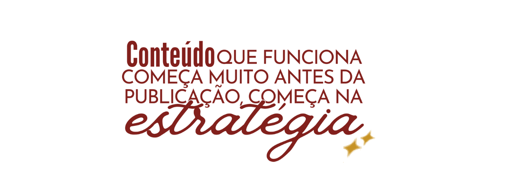
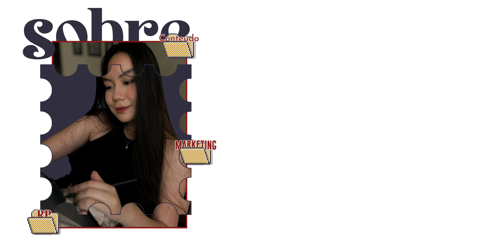

Aqui a estratégia vem antes de qualquer coisa.
Sou a Bianca, Relações Públicas pela Unesp, especialista em estratégia de conteúdo e comunicação digital. Minha missão é transformar marcas em presenças digitais com propósito, indo além das postagens e ajudando empresas a construírem posicionamento claro, comunicação consistente e conexão real com o seu público.
Ao longo de 5 anos, trabalhei com empresas dos mais diversos segmentos: indústrias, varejo, e-commerces, terceiro setor, influenciadores e marcas pessoais em nichos que vão do entretenimento à medicina, com perfis do zero a mais de 300 mil seguidores. Tudo isso para criar estratégias que não são apenas conteúdo, mas que nascem de um processo personalizado, honesto e pensado para a realidade de cada marca.
Porque acredito que uma marca forte é aquela que sabe quem é, o que tem a dizer e como quer ser lembrada.
Escolha o formato que faz mais sentido pra fase do seu negócio agora.
Para quem já tem um negócio rodando, mas sente que falta estratégia clara e não sabe por onde priorizar.
Para quem não tem tempo de pensar em conteúdo e quer só executar.
Para quem já produz conteúdo, mas precisa de direção, organização e constância.
Para quem está criando ou repaginando a marca e precisa de estratégia + identidade visual.
Me conta um pouco sobre a sua marca e eu te ajudo a encontrar o formato ideal — consultoria, conteúdo ou branding.
Falar no WhatsApp